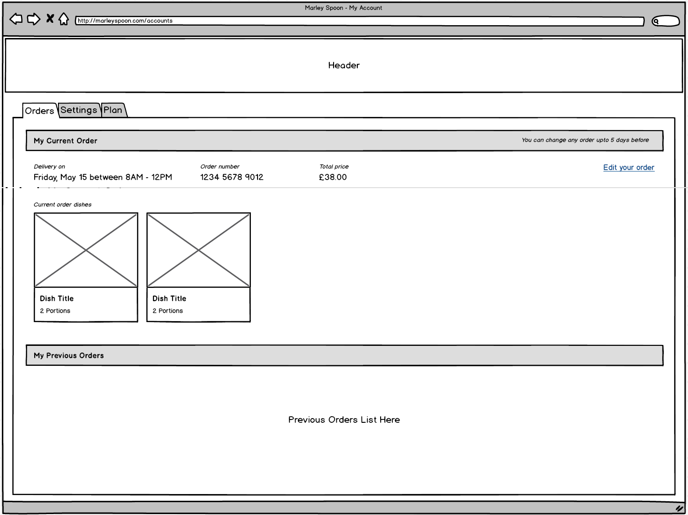
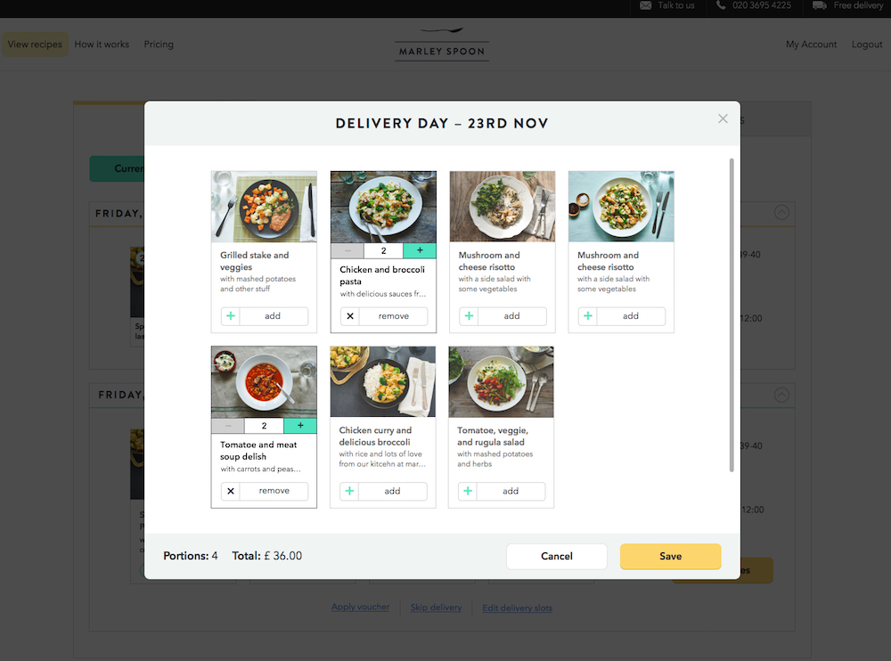
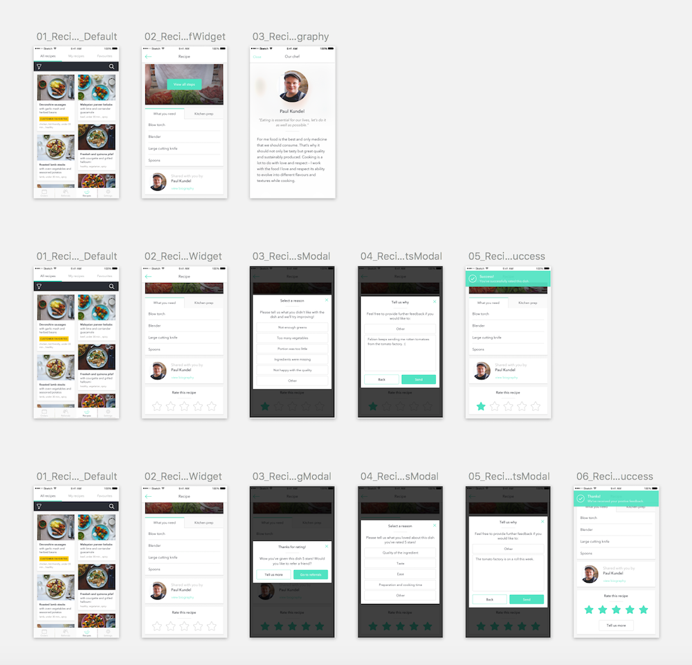

Marley Spoon is a food box subscription service. Through a 4 step sign-up process, you subscribe to receive a weekly box with 2 – 4 recipes along with all the pre-portioned ingredients necessary to cook them. Once customers sign up, they are redirected to their account, where they can see their and edit the status of their upcoming and past orders, their account information, and their account settings. We are constantly optimising the account area for the Marley Spoon product in order to retain our customers and improve their user experience while adjusting their preferences.
Account Area - Marley Spoon
Current orders section
Improving the experience
At Marley Spoon you can edit your order before it is delivered to you. You can change your delivery window, the recipes you will receive, the portions of those recipes, and you can even skip your order if you do not want to cook that given week. When I started working at Marley Spoon, the edit order experience was very confusing. Users were complaining about the difficulty of being able to edit their order on desktop and how it was almost impossible to do so on mobile. I started by making a few mock ups in Balsamic to see where we could improve.

Orders overview - Balsamiq mock up
Edit orders step 1 - Balsamiq mock up
Edit orders step 2 - Balsamiq mock up
Edit orders confirmation modal
We user tested this a few times and realized that it was still not clear to customers how they could add or remove orders. The plus and minus icons were still not clear and it was hard to tell which recipes you were actually getting versus the rest of the recipes ordered that week. I decided to make a slightly different mock up and user tested it to see if it was now more clear to people how to select and remove the recipes for their upcoming order.
Edit orders mock up - version 2
With this second version, it was more clear to people how to edit their order, but selecting the portions was still confusing. I continued to re-iterate on different versions by gatherting user feedback. The final UI I reached clearly showed how you could remove and add dishes (with a button displaying the action) and how you could add or remove portions (with a toggle button). We implemented this design and followed up on its performance with a larger group of customers.

First UI change to the edit orders area
Further UI Refinements
Although this version of the edit order section was a lot more clear to our customers, our UI was outdated. When Marley Spoon had a re-brand, we worked hard in the product team to update each and every piece of the UI in order to make slight improvements to the user experience. Once we made these changes, we user tested again. We found out that most users found it clear to edit their orders on desktop but not on the iOS app. As we worked in the product team to improve this experience, we also added a new feature to make clear the type of recipes we are selling on a given week. I was responsible for editing the iOS app and adding tags to the recipe overview displaying specific recipe features and highlighting our "customer favorite" recipes.

Recipe App Flow in Sketch
iOS App Recipe Overview

iOS App Recipe Detail
Learnings and Next Steps
We have continued to refine both the iOS app and Desktop experience for our customers in order to make their journey while navigating their account as seamless as possible. The most valuable thing I learned through this process is that user testing is probably the most important step of the UX process and it should never be overlooked.